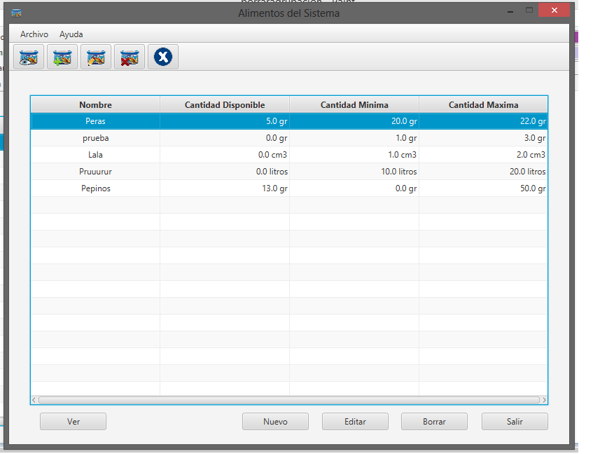
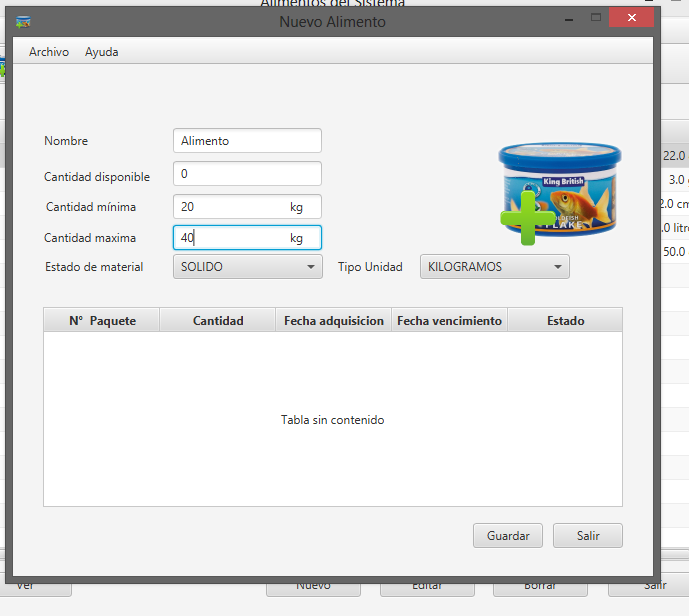

Al solicitar dar de alta nuevo recurso en el sistema, en el ejemplo actual se desea dar de alta un nuevo alimento, se deberá seleccionar la primera opción de la barra de herramientas, en la siguiente pantalla:

Se desplegará la siguiente pantalla de alta de recurso:

Deberá completarse con los datos del nuevo alimento en este caso, nombre, cantidad inicial disponible, cantidad máximo y cantidad mínima, es importante completar éste rango porque en base a él, se el stock sobrepasa la cantidad máxima o baja por debajo de la mínima, el sistema se encargará de emitir una alerta correspondiente y almacenarla en las alertas generadas.
En caso de dar de alta un insumo, la única diferencia es que las cantidades se indican en unidades y no en gramos (con representación numérica natural y no real).
Para confirmar en nuevo alimento creado, se deberá seleccionar GUARDAR, si se quiere descartar, deberá hacerse click en SALIR.
Created with the Personal Edition of HelpNDoc: Easily create Help documents